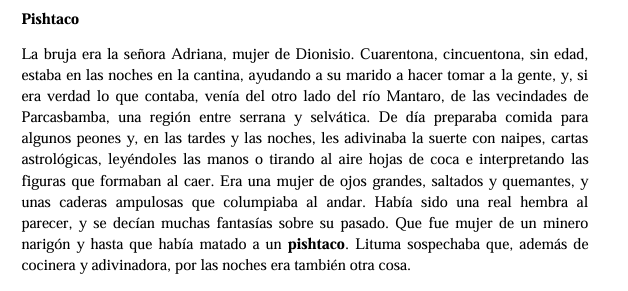
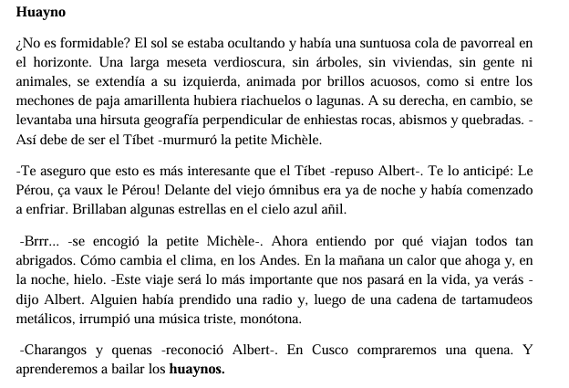
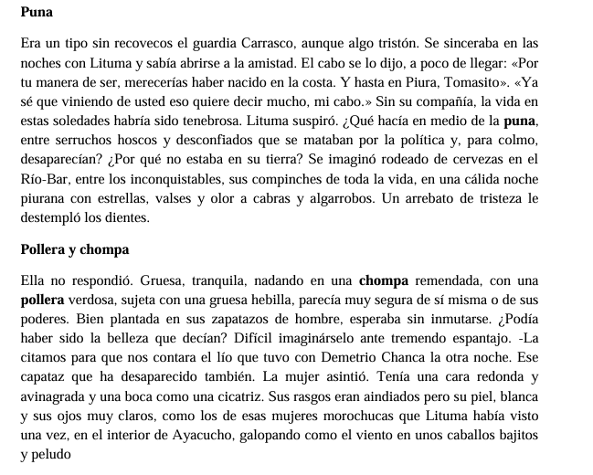
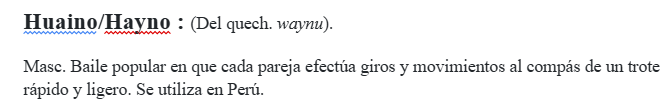

Caso práctico
Tras conocer los americanismos podemos adentrarnos de lleno en nuestro proyecto. Es la hora de empezar a usar nuestras herramientas. Así que, para la tarea de hoy haremos varias cosas:
1º Leeremos algunos fragmentos de la obra Lituma en los Andes y extraeremos aquellas palabras que no conozcamos. Es muy probable que algunas de ellas sean los americanismos que tanto estamos buscando
Estos son los fragmentos con los que vamos a trabajar



Una vez que hemos seleccionado las palabras que más nos han gustado, tenemos que comprobar si se trata de americanismos. Para comprobarlo vamos a usar el Diccionario de americanismos: https://www.asale.org/damer/
Si la palabra que buscamos aparece en este diccionario, querrá decir que, efectivamente, estamos ante un americanismo. Es entonces cuando nos toca elaborar su definición añadiendo el origen de la palabra y los países que la emplean.
